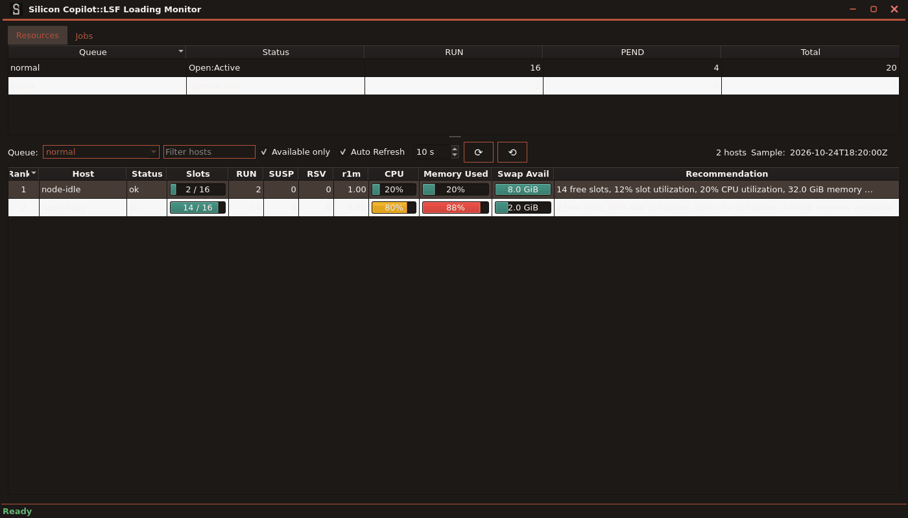
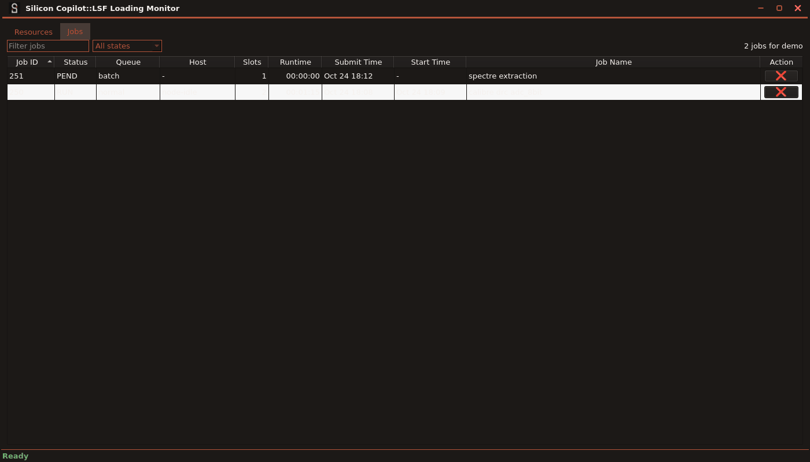

EXECUTION / LSF
LSF · 选择合适的运行位置
SiCo 工作会话、CAD flow、完整 AI Assistant 和模型 HTTP worker 的远程执行各有入口。根据需要移动的工作选择配置。
图形界面：LSF Loading Monitor




从 CAD flow 的 Hardware 区点击 LSF 按钮打开时，窗口进入“选择运行位置”模式，底部出现 Use Auto、Use Selected Host 和 Cancel。独立运行 lsfmonitor 时只查看资源与作业，不出现回填按钮。
| 页面/控件 | 详细说明 | 使用要点 |
|---|---|---|
| Resources 页签 | 显示队列、主机资源、槽位和负载。 | 选择运行位置先看这里；Jobs 页只用于查看作业。 |
| Queue 下拉 | 选择要观察的队列；候选来自当前用户可提交且开放的队列。 | 队列候选未加载时不要凭记忆填写名称。 |
| Filter hosts | 按主机名过滤资源表。 | 过滤只影响显示；选择主机时要确认当前选中行仍然可见。 |
| Available only | 只显示有可用槽位的节点。 | 默认开启；排查拓扑或满载节点时再关闭。 |
| Auto Refresh / 间隔 | 按设定秒数自动刷新快照。 | 频繁刷新会增加集群查询负载；调试时可临时关闭。 |
| 刷新 / 重新加载拓扑图标 | 刷新一次快照，或重新读取队列、主机成员和容量拓扑。 | 队列/主机列表发生变化时用 Reload Topology，而不是反复点刷新。 |
| 主机计数与 Sample 时间 | 显示当前过滤后的主机数和快照采样时间。 | Sample 过旧时状态栏会提示 stale；不要依据旧快照提交。 |
| 队列表 / 主机表 | 队列表展示状态和槽位；主机表展示状态、最大/运行/挂起作业、负载、CPU 和内存。 | 选择主机后检查 cpu、memory 与当前作业数，而不是只看 RUN 数量。 |
| Use Auto | 把当前队列写回 flow，并让 LSF 调度器选择主机。 | 推荐作为默认选择；不锁定具体节点。 |
| Use Selected Host | 把当前队列和选中主机写回 flow。 | 只有主机在快照中可验证且有资源时才启用；不要依赖已消失的行。 |
| Cancel | 关闭选择窗口，不修改 flow 的 queue/host。 | 取消后原设置保持不变；需要重新选择时再次点击 LSF。 |
| Jobs 页签 | 列出当前用户的未完成作业。 | 作业列表与 Resources 快照同时生成；状态和主机可能随后变化。 |
| Filter jobs | 按 Job ID、名称或主机等文本过滤作业。 | 过滤不改变作业本身；清除过滤后再核对总数。 |
| All states 下拉 | 按 PEND、RUN 等状态筛选。 | 需要查看全部作业时选择 All states。 |
| 作业表 | 显示 Job ID、用户、状态、队列、执行主机、槽位、时间、进度和 Job Name；Action 列提供 Kill。 | Kill 会请求确认并调用 bkill；不要用它取消不属于本任务的作业。 |
| 状态栏 | 显示刷新中、ready、stale 或错误诊断。 | stale/error 时不要提交；先刷新或查看 diagnostic 文本。 |
四种使用方式
| 需求 | 入口 | 远端执行内容 |
|---|---|---|
| 将 SiCo 工作会话限定到专用队列 | 站点统一提交入口；见模型集中部署建议 | SiCo 与其新启动的工程服务；由站点安排同节点的 Virtuoso 联动和图形显示。 |
| 在计算集群跑 DRC / LVS / RCE / LEF | 表单 Hardware Configuration → LSF Farm | 该次 Python flow 与其 EDA 子进程。 |
| 在远端运行整个 AI Assistant 终端会话 | PROJ_AI_LSF_EXE / PROJ_AI_LSF_ARGS | controller、MCP、terminal 与 agent。 |
| 只有某个队列可以访问模型服务 | SICO_CODEX_LSF_EXE / SICO_CODEX_LSF_ARGS | 访问上游 Responses API 的 HTTP worker。 |
队列与模型转发节点的访问权限由站点共同管理。队列名或启动参数用于选择执行位置；员工授权、执行节点隔离、模型端口白名单及转发认证按安装章节的两层权限方案配置。
CAD flow 提交
先加载站点 LSF 环境，确认 bqueues、bhosts、lshosts、lsload、bjobs、bsub 和 bkill 可用。在表单选择 LSF Farm 后，SiCo 动态查询当前用户能提交且开放的队列。Queue / Host 验证完成后才允许提交。
通常选择 Auto (LSF Scheduler) 让 LSF 分配节点；显式选择 Host 会限制执行节点。CPU 申请与 GUI 设置一致，RCE 取 LVS / EXT CPU 较大值。交互队列使用 bsub -Is，禁止交互的队列使用 -K 并通过日志回显结果。
export SICO_LSF_BSUB="bsub"
export SICO_LSF_BKILL="bkill"
export SICO_LSF_BQUEUES="bqueues"
lsfmonitorSICO_LSF_BQUEUES 用于提交前查询交互模式；拓扑发现仍使用 PATH 中的查询工具。Monitor 的 Resources 页显示资源，Jobs 页显示当前用户未完成任务；需要时使用 Reload Topology 刷新拓扑。Kill 动作会请求确认并调用 bkill。
完整 AI Assistant 远程会话
export PROJ_AI_LSF_EXE="bsub"
export PROJ_AI_LSF_ARGS="-I -XF -q ai"标准 bsub 参数必须以普通 -I 开头，不能使用 -Is 或 -Ip，以免伪终端改变控制通道。安装、Python 和工程路径需在两端一致可见，用户 numeric UID 一致，工程目录可写；显示与授权通过站点 X11 方案提供。
使用 -XF 前，先在 Virtuoso 外验证站点 SSH 主机信任与用户认证，固定节点执行 bsub -I -XF -q ai -m <host> /bin/true 应无交互提示。认证问题由站点配置解决，SiCo 不处理 SSH 密码。
仅模型网络请求走 LSF
export SICO_API_BASE_URL="https://api.example.com/v1"
export SICO_MODEL="your-model-name"
export SICO_PROVIDER="responses"
export SICO_CODEX_LSF_EXE="bsub"
export SICO_CODEX_LSF_ARGS="-Is -q ai"
# 仅旧 flat 工具格式网关需要：
# export SICO_LEGACY_0114="1"此方式只把上游 HTTP 放到队列节点，工程服务、GUI 和 IC 通信仍留在原位置。每个请求提交一次交互作业，排队就绪最多等 120 秒。支持 -I / -Is 与 -q/-m/-R/-n/-W/-app；不能重定向控制通道或覆盖内部作业名。
SICO_LEGACY_0114 只选择工具格式，不改变网络权限，也不将 Chat Completions 代理变成 Responses 代理。设置后需重新启动工程服务。若显示 cleanup unconfirmed，应核对 LSF 作业终态，不能只凭本地 bsub 退出推断远端已停止。
排查顺序
- 无 Queue：先在同一用户环境检查 bqueues 是否成功、是否有可提交的开放队列。
- 作业启动失败：检查执行节点同路径安装、许可证、共享工程与工具环境。
- 模型 502：检查真正发送上游 HTTP 的节点是否具备网络权限。
- 模型 400：核对 API 协议、模型名和工具格式；已成功排队不表示上游接受请求。
- 图形窗口或中文输入失败：检查 DISPLAY、XAUTHORITY，并在实际执行 GUI 的节点按拼音输入法要求与 lib 安装命令检查依赖、UTF-8 locale、中文字体和 Qt 插件。